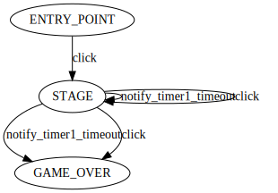

stage_controller-StageStateMachine.svg

state_machine('StageStateMachine', name:'state_machine') {
def_event :onCreate => [arg('saved_instance_state', type:'Bundle')]
def_event :onResume, :onPause
def_timer :timer1, 1000, pending_if:'not self.parent_context.isResumed()'
def_public_event :click
state(:ENTRY_POINT, entry:'self.parent_context.setStageNo(0)') {
click :STAGE
}
state(:STAGE, timer: :timer1,
entry:'self.parent_context.setStageNo(self.parent_context.getStateNo() + 1)',
save:'out_instance_state["STAGE_NO"] = self.parent_context.getStateNo()',
restore:'self.parent_context.setStageNo(saved_instance_state["STAGE_NO"])') {
notify_timer1_timeout :STAGE, if:'self.parent_context.getStateNo() < StageController.STAGE_COUNT'
notify_timer1_timeout :GAME_OVER
click :STAGE, if:'self.parent_context.getStateNo() < StageController.STAGE_COUNT'
click :GAME_OVER
}
state(:GAME_OVER, entry:'self.parent_context.onGameOver()') {
}
}